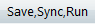

The script segment used to run the mission is shown below.
BeginMissionSequence RunEstimator bat
The first script line, BeginMissionSequence, is a required command which indicates that the “Command” section of the GMAT script has begun. The second line of the script issues the RunEstimator command with the bat BatchEstimator resource, defined in the Create and configure BatchEstimator object section, as an argument. This tells GMAT to perform the estimation using parameters specified by the bat resource.
We have now completed all of our script segments. See the file,
Tut_Orbit_Estimation_using_DSN_Range_and_Doppler_Data.script,
in the samples folder, for a listing of the entire script. We are now
ready to run the script. Hit the Save,Sync,Run button, (). Given the amount of data we are processing, our
mission orbit, and our choice of force model, the script should finish
execution in about 1-2 minutes.
We analyze the results of this script in many ways. In the first subsection, we analyze the Message window output. In the second subsection, we look at the plots of the observation residuals, and in the third subsection, we analyze the batch estimation report. Finally, in the fourth subsection, we discuss how the contents of the MATLAB output file can be used to analyze the results of our estimation process.
We first analyze the message window output focusing on the messages that may require some explanation. Follow along using Appendix A – GMAT Message Window Output where we have put a full listing of the output. Soon into the message flow, we get a message telling us how many measurement records were read in.
Data file '../output/Simulate DSN Range and Doppler Data 3 weeks.gmd' has 1348 of 1348 records used for estimation.
The value of 1348 is the number of lines of measurement data in the GMD file listed above.
Next, the window output contains a description of the tracking configuration. The output below confirms that we are processing range and Doppler data from the CAN, GDS, and MAD ground stations.
List of tracking configurations (present in participant ID) for load
records from data file
'../output/Simulate DSN Range and Doppler Data 3 weeks.gmd':
Config 0: {{22222,11111,22222},DSN_SeqRange}
Config 1: {{22222,11111,22222},DSN_TCP}
Config 2: {{33333,11111,33333},DSN_SeqRange}
Config 3: {{33333,11111,33333},DSN_TCP}
Config 4: {{44444,11111,44444},DSN_SeqRange}
Config 5: {{44444,11111,44444},DSN_TCP}Later on in the output, GMAT echoes out the a priori estimate that we input into the script.
a priori state: Estimation Epoch: 27253.5004170646025158930570 A.1 modified Julian 27253.5004166666661733004647 TAI modified Julian 19 Aug 2015 00:00:00.000 UTCG Sat.SunMJ2000Eq.X = -126544963 Sat.SunMJ2000Eq.Y = 61978518 Sat.SunMJ2000Eq.Z = 24133225 Sat.SunMJ2000Eq.VX = -13.789 Sat.SunMJ2000Eq.VY = -24.673 Sat.SunMJ2000Eq.VZ = -10.662
Next, GMAT outputs some data associated with the initial iteration of the Outer Loop Sigma Editing (OLSE) process as shown below.
Number of Records Removed Due To: . No Computed Value Configuration Available : 0 . Out of Ramp Table Range : 0 . Signal Blocked : 0 . Initial RMS Sigma Filter : 0 . Outer-Loop Sigma Editor : 0 Number of records used for estimation: 1348
As previously mentioned, the OLSE process can edit (i.e., remove) certain data from use as part of the estimation algorithm. There are five conditions which could cause a data point to be edited. For each condition, the output above specifies how many data points were edited. We now discuss the meaning of the five conditions.
The first condition, “No Computed Value Configuration Available” means that GMAT has read in some measurement data but no corresponding tracking configuration has been defined in the GMAT script. Thus, GMAT has no way to form the computed, C, value of the measurement. For example, this might happen if our script did not define a GroundStation object corresponding to some data in the GMD file. Since we have defined everything we need to, no data points are edited for this condition.
The second condition, “Out of Ramp Table Range,” means that while solving the light time equations, GMAT needs to know the transmit frequency, for some ground station, at a time that is not covered by the ramp table specified in our TrackingFileSet resource, DSNsimData. Looking at our input GMD file, we see that our measurement times range from 27253.5004166... to 27274.5004166666... TAIMJD. Since our ramp table has a ramp record for all three ground stations at 27252 TAIMJD which is about 1 ½ days before the first measurement and since our a priori Cartesian state estimate is fairly good, it makes sense that no measurements were edited for this condition.
The third condition, “Signal Blocked,” indicates that while taking into account its current estimate of the state, GMAT calculates that a measurement for a certain measurement strand is not possible because the signal is “blocked.” Actually, the signal does not have to blocked, it just has to violate the minimum elevation angle constraint associated with a given ground station. Consider a GDS to Sat to GDS range two way range measurement at given time. If the GDS to Sat elevation angle was 6 degrees, the measurement would be edited out since the minimum elevation angle, as specified by the GDS.MinimumElevationAngle field, is set at 7 degrees. Since, in our simulation, we specified that only data meeting this 7 degree constraint should be written out, it is plausible that no data were edited because of this condition.
The fourth condition, “Initial RMS Sigma Filter,” corresponds to GMAT’s OLSE processing for the initial iteration. As mentioned before, you can find a complete description of the OLSE in the “Behavior of Outer Loop Sigma Editing (OLSE)” discussion in the BatchEstimator Help. As described in the Help, for the initial iteration, data is edited if
|Weighted Measurement Residual| > OLSEInitialRMSSigma
where the Weighted Measurement Residual for a given measurement is given by
(O-C)/NoiseSigma
and where NoiseSigma are inputs that we set when we created the various ErrorModel resources.
We note that for a good orbit solution, the Weighted Measurement Residual has a value of approximately one. Since our a priori state estimate is not that far off from the truth and since we have set OLSEInitialRMSSigma to a very large value of 10,000, we do not expect any data to be edited for this condition.
The fifth condition, “Outer-Loop Sigma Editor,” corresponds to GMAT’s OLSE processing for the second or later iteration. Since the output we are analyzing is for the initial iteration of the batch estimator, the number of data points edited because of this condition is 0. We will discuss the OLSE processing for the second or later iterations when we analyze the output for a later iteration.
WeightedRMS residuals for this iteration : 1459.96324774 BestRMS residuals : 1459.96324774 PredictedRMS residuals for next iteration: 0.977684716761
The first output line above gives the weighted RMS calculated when the estimate of the state is the input a priori state (i.e., the 0th iteration state). The weighted RMS value of approximately 1460 is significantly far away from the value of 1 associated with a good orbit solution. The second output line gives the best (smallest) weighted RMS value for all of the iterations. Since this is our initial iteration, the value of the BestRMS is the same as the WeightedRMS. The third output line is the predicted weighted RMS value for the next iteration. Because of the random noise involved in generating the simulated input data, the numbers you see will differ from that above.
Next, GMAT outputs the state associated with the first iteration of the batch estimator. Let’s define what we mean by iteration. The state at iteration ‘n’ is the state after GMAT has solved the so-called normal equations (e.g., Eq. 4.3.22 or 4.3.25 in Tapley [2004]) ‘n’ successive times. By convention, the state at iteration 0 is the input a priori state.
------------------------------------------------------ Iteration 1 Current estimated state: Estimation Epoch: 27253.5004170646025158930570 A.1 modified Julian 27253.5004166666661733004647 TAI modified Julian 19 Aug 2015 00:00:00.000 UTCG Sat.SunMJ2000Eq.X = -126544964.083 Sat.SunMJ2000Eq.Y = 61978520.0714 Sat.SunMJ2000Eq.Z = 24133223.2424 Sat.SunMJ2000Eq.VX = -13.789001388 Sat.SunMJ2000Eq.VY = -24.6729990628 Sat.SunMJ2000Eq.VZ = -10.662000523
Next, GMAT outputs statistics on how many data points were edited for this iteration.
Number of Records Removed Due To: . No Computed Value Configuration Available : 0 . Out of Ramp Table Range : 0 . Signal Blocked : 0 . Initial RMS Sigma Filter : 0 . Outer-Loop Sigma Editor : 1 Number of records used for estimation: 1347
For the same reasons we discussed for the initial 0th iteration, as expected, no data points were edited because “No Computed Value Configuration Available” or because a requested frequency was “Out of Ramp Table Range.” Also, for the same reasons discussed for the 0th iteration, it is plausible that no data points were edited for this iteration because of signal blockage. Note that there are no data points edited because of the “Initial RMS Sigma Filter” condition. This is as expected because this condition only edits data on the initial 0th iteration. Finally, we note that, in this example, 1 data point out of 1348 data points are edited because of the OLSE condition. Due to the randomness of the noise added in the simulation step, you may see more or fewer points edited.
As discussed in the “Behavior of Outer Loop Sigma Editing (OLSE)” section in the BatchEstimator Help,” data is edited if
|Weighted Measurement Residual| > OLSEMultiplicativeConstant * WRMSP + OLSEAdditiveConstant
where
WRMSP is the predicted weighted RMS calculated at the end of the previous iteration.
In the Create and configure BatchEstimator object section, we chose OLSEMultiplicativeConstant = 3 and OLSEAdditiveConstant = 0 and thus the equation above becomes
|Weighted Measurement Residual| > 3 * WRMSP
It is a good sign that only a few points are edited out. If too much data is edited out, even if you have a good weighted RMS value, it indicates that you may have a problem with your state estimate. Next, GMAT outputs some root mean square, (RMS), statistical data associated with iteration 1.
WeightedRMS residuals for this iteration : 0.974259069508 BestRMS residuals : 0.974259069508 PredictedRMS residuals for next iteration: 0.974224174165
The first output line above gives the weighted RMS calculated when the estimate of the state is the iteration 1 state. The weighted RMS value shown here of 0.974 is close to the value of 1 associated with a good orbit solution. The second output line gives the best (smallest) weighted RMS value for all of the iterations. Since this iteration 1 WeightedRMS value is the best so far, BestRMS is set to the current WeightedRMS value. The third output line is the predicted weighted RMS value for the next iteration. Note that the RMS values calculated above only use data points that are used to form the state estimate. Thus, the edited points are not used to calculate the RMS.
Because the predicted WeightedRMS value is very close to the BestRMS value, GMAT, as shown in the output below, concludes that the estimation process has converged. As previously mentioned, see the “Behavior of Convergence Criteria” discussion in the BatchEstimator Help for complete details.
This iteration is converged due to relative convergence criteria.
********************************************************
*** Estimating Completed in 2 iterations
********************************************************
Estimation converged!
|1 - RMSP/RMSB| = | 1- 0.974224 / 0.974259| = 3.58173e-05 is
less than RelativeTol, 0.0001GMAT then outputs the final, iteration 2, state. Note that GMAT does not actually calculate the weighted RMS associated with this state but we assume that it is close to the predicted value of 1.00804237273 that was previously output.
Final Estimated State: Estimation Epoch: 27253.5004170646025158930570 A.1 modified Julian 27253.5004166666661733004647 TAI modified Julian 19 Aug 2015 00:00:00.000 UTCG Sat.SunMJ2000Eq.X = -126544963.637 Sat.SunMJ2000Eq.Y = 61978520.6939 Sat.SunMJ2000Eq.Z = 24133223.6628 Sat.SunMJ2000Eq.VX = -13.7890015517 Sat.SunMJ2000Eq.VY = -24.6729992038 Sat.SunMJ2000Eq.VZ = -10.6620000077
Finally, GMAT outputs the final Cartesian state error covariance matrix and correlation matrix, as well as the time required to complete this script.
Final Covariance Matrix:
6.568631977218e+00 1.044777728608e+01 3.117063688646e+00 -2.346661054173e-06 4.986079628477e-07 1.614625814366e-06
1.044777710993e+01 2.043036379635e+01 -4.249227712186e+00 -3.704711284679e-06 1.982306082751e-07 3.981551919217e-06
3.117064114026e+00 -4.249226952008e+00 2.371354504010e+01 -1.180689659682e-06 1.672460285882e-06 -2.645600028262e-06
-2.346661055323e-06 -3.704711349403e-06 -1.180689508343e-06 8.389295488954e-13 -1.640460214611e-13 -6.093050987987e-13
4.986079968962e-07 1.982306774906e-07 1.672460265672e-06 -1.640460335201e-13 1.032410080241e-12 -2.192341045550e-12
1.614625733805e-06 3.981551830454e-06 -2.645600161576e-06 -6.093050697768e-13 -2.192341060048e-12 5.785215030292e-12
Final Correlation Matrix:
1.000000000000 0.901879241925 0.249752571898 -0.999655028427 0.191467746900 0.261923625542
0.901879226720 1.000000000000 -0.193051736939 -0.894856861497 0.043162495440 0.366230559395
0.249752605981 -0.193051702403 1.000000000000 -0.264712696708 0.338011482643 -0.225873973518
-0.999655028917 -0.894856877130 -0.264712662778 1.000000000000 -0.176269364287 -0.276574613248
0.191467759975 0.043162510510 0.338011478559 -0.176269377245 1.000000000000 -0.897061553257
0.261923612473 0.366230551230 -0.225873984900 -0.276574600074 -0.897061559189 1.000000000000
********************************************************
Mission run completed. ===> Total Run Time: 220.532 seconds ========================================
GMAT creates plots on a per iteration, per ground station, and per measurement type basis. We elaborate on what this means. When the script first runs, the first plots that show up are the 0th iteration residuals. This means that when calculating the ‘O-C’ observation residual, GMAT calculates the Computed, C, value of the residual using the a priori state. As shown in Appendix B – Zeroth Iteration Plots of Observation Residuals, there are 6 of these 0th iteration residual plots. For each of the 3 stations, there is one plot of the range residuals and one plot of the Doppler residuals. After iteration 1 processing is complete, GMAT outputs the iteration 1 residuals as shown in Appendix C – First Iteration Plots of Observation Residuals. As previously mentioned, although for this script, GMAT takes two iterations to converge, the actual iteration 2 residuals are neither calculated nor plotted. DSN_Estimation_Create_and_configure_the_Ground_Station_and_related_parameters
We now analyze the CAN range and Doppler residuals. For the 0th iteration, the range residuals vary from approximately 11,000 to 31,000 RU. These residuals are this large because our a priori estimate of the state was deliberately perturbed from the truth. There are multiple indicators on this graph that indicate that GMAT has not yet converged. First, the residuals have an approximate linear structure. If you have modeled the dynamics and measurements correctly, the plots should have a random appearance with no structure. Additionally, the residuals are biased, i.e., they do not have zero mean. For a well modeled system, the mean value of the residuals should be near zero. Finally, the magnitude of the range residuals is significantly too large. Recall that in the Create and configure the Ground Station and related parameters section, we set the 1 sigma measurement noise for the CAN range measurements to 10.63 RU. Thus, for a large sample of measurements, we expect, roughly, that the vast majority of measurements will lie between the values of approximately -32 and +32 RU. Taking a look at the 1st iteration CAN range residuals, this is, approximately, what we get.
The 0th iteration CAN Doppler residuals range from approximately 0.0050 to 0.01535 Hz. As was the case for the range 0th iteration residuals, the fact that the Doppler residuals are biased indicates that GMAT has not yet converged. Recall that in the Create and configure the Ground Station and related parameters section, we set the 1 sigma measurement noise for the CAN Doppler measurements to 0.0282 Hz. Thus, for a large sample of measurements, we expect, roughly, that the vast majority of measurements will lie between the values of approximately -0.0846 and +0.0846 RU. Taking a look at the 1st iteration CAN Doppler residuals, this is, approximately, what we get.
There is one important detail on these graphs that you should be aware of. GMAT only plots the residuals for data points that are actually used to calculate the solution. Recall that for iteration 0, all 1348 of 1348 total measurements were used to calculate the orbit state, i.e., no data points were edited. Thus, if you counted up all the data points on the 6 iteration 0 plots, you would find 1348 points. The situation is different for the 1st iteration. Recall that for iteration 1, 1347 of 1348 total measurements were used to calculate the orbit state, i.e., 1 data point was edited. Thus, if you counted up all the data points on the 6 iteration 1 plots, you would find 1347 points. If you wish to generate plots that contain both non-edited and edited measurements, you will need to generate them yourself using the MATLAB output file as discussed in the Matlab Output File section.
We note that the graphs have some interactive features. Hover your mouse over the graph of interest and then right click. You will see that you have four options. You can toggle both the grid lines and the Legend on and off. You can also export the graph data to a text file, and finally, you can export the graph image to a bmp file.
When we created our BatchEstimator resource, bat, in the Create and configure BatchEstimator object section, we specified that the output file name would be 'Orbit Estimation using DSN Range and Doppler Data.report. Go to GMAT’s ‘output’ directory and open this file, preferably using an editor such as Notepad++ where you can easily scroll across the rows of data.
The first approximately 150 lines of the report are mainly an echo of the parameters we input into the script such as initial spacecraft state, force model, propagator settings, measurement types to be processed, etc.
After this echo of the input data, the output report contains measurement residuals associated with the initial 0th iteration. Search the file for the words, ‘ITERATION 0: MEASUREMENT RESIDUALS’ to find the location of where the relevant output begins. This output sections contains information on all of the measurements, both non-edited and edited, that can possibly be used in the estimation process. Each row of data corresponds to one measurement. For each measurement, the output tells you the following
Iteration Number
Record Number
Epoch in UTC Gregorian format
Observation type. ‘DSN_SeqRange’ corresponds to DSN sequential range and ‘DSN_TCP’ corresponds to DSN total count phase-derived Doppler.
Participants. For example, ‘22222,11111,22222’ tells you that your measurement comes from a CAN to Sat to CAN link.
Edit Criteria.
Observed Value (O)
Computed Value (C)
Observation Residual (O-C)
Elevation Angle
We have previously discussed the edit criteria. In particular, we discussed the various reasons why data might be edited. If no edit code is shown for a residual record, this means that the data was not edited and the data was used, for this iteration, to calculate a state estimate.
Note that if the elevation angle of any of the measurements is below our input criteria of 7 degrees, then the measurement would be edited because the signal would be considered to be “blocked.” For range data, we would see Bn where n is an integer specifying the leg number. For our two way range data type, we have two legs, the uplink leg represented by the integer, 1, and the downlink leg, represented by the integer 2. Thus, if we saw “B1” in this field, this would mean that the signal was blocked for the uplink leg. Correspondingly, for Doppler data, we would also see Bn, but the integer n would be 1 or 2 depending upon whether the blockage occurred in the start path (n=1) or the end path (n=2).
After all of the individual iteration 0 residuals are printed out, four different iteration 0 observation summary reports, as shown below, are printed out.
Observation Summary by Station and Data Type
Observation Summary by Data Type and Station
Observation Summary by Station
Observation Summary by Data Type
After all of the observation summaries are printed out, the updated state and covariance information, obtained by processing the previous residual information, are printed out. The output also contains statistical information about how much the individual components of the state estimate have changed for this iteration.
At this point, the output content repeats itself for the next iteration. The new state estimate is used to calculate new residuals and the process starts all over again. The process stops when the estimator has either converged or diverged.
We now give an example of how this report can be used. In the Message Window Output section, we noted that, for iteration 1, some measurements were edited because of the OLSE criteria. Let’s investigate this in more detail. What type of data was edited? From what station? Could there be a problem with this data type at this station? We look at the ‘Observation Summary by Station and Data Type’ for iteration 1. We see that one range measurement from the CAN station was edited. The mean residual and 1-sigma standard deviation for GDS range measurements was -0.222339 and 10.082896 RU, respectively. The mean residual and 1-sigma standard deviation for MAD range measurements was 0.199925 and 10.205535 RU, respectively.
Now that we know that the issue was with GDS and MAD range measurements, we look at the detailed residual output, for iteration 1, to determine the time these measurements occurred. We can search for the OLSE keyword to help do this. We determine that a CAN range measurement was edited at 02 Sep 2015 04:00:00.000 UTCG and that it had an observation residual of -33.161377 RU. This is just a bit beyond the 3-sigma value and we conclude that there is no real problem with the CAN range measurements. This is just normal statistical variation.
We remind you, that when you do your run, you may have a different number of data points edited. This is because, when you do your simulation, GMAT uses a random number generator and you will be using a different data set.
In the Create and configure BatchEstimator object section, when we created our
BatchEstimator resource, bat, we chose our MATLAB
output file name, 'Orbit Estimation using DSN Range and
Doppler Data.mat.' By default, this file is created in GMAT’s
‘output’ directory. This file will only be created if you have MATLAB
installed and properly configured for use with GMAT.
Start up a MATLAB session. Change the directory to your GMAT ‘output’ directory and then type the following at the MATLAB command prompt.
>> load 'Orbit Estimation using DSN Range and Doppler Data.mat'
After the file has loaded, type the following command to obtain a list of available variable names inside this file.
>> whos
You should see something similar to the following:
>> whos Name Size Bytes Class Attributes EstimationConfig 1x1 2894 struct Iteration 2x1 1479640 struct Observed 1x1 1232484 struct
Each of the variables is a structure with multiple fields containing arrays of data such as measurements, residuals, edit flags, state information, and other information useful for analysis. Full details on the contents of the BatchEstimator MATLAB file can be found in the section called “Batch Estimator MATLAB Data File” in the BatchEstimator resource documentation.
You can use the data in the MATLAB file to perform custom plots and statistical analysis using MATLAB. For example, to produce a plot of all range residuals from the second iteration, you can do the following:
>> I = find(strcmp(Observed.MeasurementType, 'DSN_SeqRange')); >> t = Observed.EpochUTC(1,I); >> y = cell2mat(Iteration(2).Residual(I)); >> plot(t, y, 'go'); >> datetick